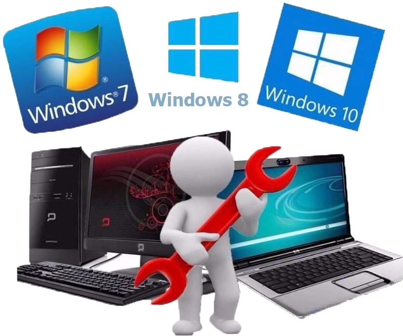

Прайс на установку ПО

- Установка операционной системы Windows (7, 8.1, 10) - 300 руб.
- Установка драйверов и прикладного ПО - 300 руб.
- Установка пакета Microsoft Office (2007, 2010, 2016)- 300 руб.
- Установка антивирусной программы - 300 руб.
- Чистка ПК от пыли и от вирусов - 500 руб.
- Замена термопасты и смазка кулеров - 500 руб.
- Определение и замена вышедших из строя комплектующих - 500 руб. + стоимость комплектующих.
- Консультация по настройке, апгрейду ПК - 300 руб.
5 интересных фактов о Windows!
- С момента появления в 1985 году первой версии ОС Microsoft Windows, прошло много лет. История развития получилась долгой и интересной. За эти годы произошло немало событий, в том числе курьёзных. Пользователи помнят многие мелочи. Это не только синий «экран смерти» во время презентации 98-й винды.
- Мы привыкли, что Windows – самостоятельная система с историей и особенностями. Но так было не всегда. На заре появления она представляла собой графический интерфейс для DOS, к созданию классической версии которого Майкрософт с Гейтсом отношения не имели. Самостоятельного продукта с продуманной архитектурой ядра не существовало.
- Изначально Windows назывался Interface Manager, но менеджеры и маркетологи решили, что это слишком скучно. Они-то и предложили вариант, который знает сегодня каждый. Пиарщики попали в яблочко, и «окошки» стали хитом. Компания изначально называлась Micro-Soft (micro software), и дефис убрали только в 1976.
- Фоновый рисунок рабочего стола в Windows XP используемый по умолчанию, безусловно, является наиболее часто просматриваемой фотографией в истории. Она была сделана Чарльзом Орейра в 1996 году в калифорнийском округе Сонома. Фотограф продал её за небольшую сумму, а Microsoft использовал в качестве обоев рабочего стола в операционной системе, которая после премьеры захватила около 90% доли на глобальном рынке.
- Не будет Windows «11», «12» и прочих. Только апдейты, улучшения, заплатки. Команда направит усилия на сохранение актуальности в течение многих лет. С выходом этой оси произошло важное событие – разработчики решили не бороться с её пиратским распространением. Так они обрели массу поклонников в самых пиратских регионах, включая огромный Китай.
